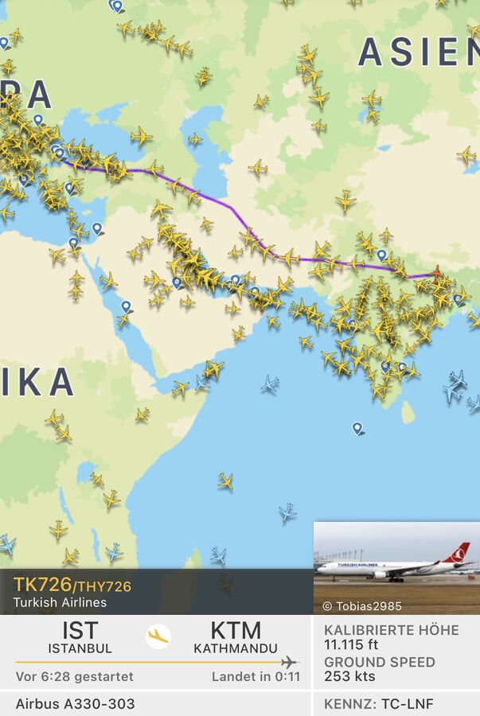
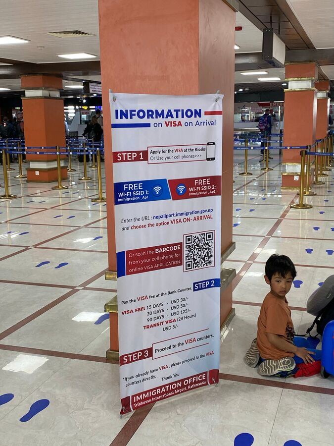

18.04.2022. İstanbul'dan Katmandu'ya uçuş yaklaşık 7 saat sürdü ve zaman zaman epey sarsıntılıydı. Şiddetli yağmur altında kalktığımız İstanbul'dan kısa süre sonra uçak çok sallanmaya başladı. Bu da 2 saat kadar böyle devam etti. Neyse ki ikimiz de uyuyabildik.

Katmandu'da hava yaklaşık 30 dereceyle oldukça sıcak ama puslu idi. İniş ve terminal binasına transfer sorunsuz geçti. Havalimanında birkaç terminalden birinde vize satın almamız gerekti. 30 güne kadar ücret: kişi başı 50 USD. Ücretin ödendiği gişedeki kuyruk maalesef uzun ve yavaştı.

Turda her şeyi rahatça ödeyebilmek için euroyu rupiye çevirdim. Konaklama ve yemek dahil, ama su, elektrik ve belki bir iki duş paralı. Fiyat da ulaşılan yükseklikle artıyor. Bu arada şu an (Nisan 2022) 1 euro yaklaşık 130 rupi.

Ülkeye giriş de oldukça yavaştı. Burada işler rahat bir tempoda yürüyor. Dijital parmak izi veriliyor ve fotoğraf çekiliyor. Elbette aşı sertifikası da gösterilmeli. Kimsenin istemediği şey ise Almanya'da doldurmam istenen ve kâğıt olarak sunduğum International Traveller Arrival formuydu.
Bagaj bantlarına giderken ilginç bir şekilde bir bagaj kontrolünden geçmemiz gerekti. Arkasında çantalarımız zaten bandın yanında duruyordu. 2009'daki kadar kaotik değil artık; hatırladığım kadarıyla o zaman tek bir bant vardı ve görevliler her çantayı banttan alıp bir yere yığıyordu. Bu da kaosu tamamlıyordu.
Çantalar elimizde, ulusal bir mobil operatörün gişesine gittik. Orada kişi başı 1.200 rupiye 28 gün geçerli, 28 GB internetli SIM kartlar aldık. Bu gişede de tam bir kaos vardı. Muhtemelen hepsi Hindistan kökenli 3 görevli, oldukça belirgin Hint aksanlı İngilizceleriyle aynı anda 4-5 müşteriye hizmet veriyordu. Her seferinde dikkatimi çekiyor: bu İngilizceyi sadece ben değil, Hintli müşterilerin kendileri de anlayamıyor. Bu arada: başvuru için vesikalık fotoğraf götürün.
Havalimanının önünde transferimiz bizi bekliyordu ve hızlı bir yolculukla Katmandu'nun merkezinden geçerek otantik Thamel semtindeki Ramada Encore Otel'e gittik.
Buradaki pek çok şey geçmişteki kaotik İstanbul'u hatırlatıyor. Günlük ihtiyaçlar için çok sayıda küçük dükkân yan yana diziliyor. Aralarında, nesiller öncesindeki gibi bir şeyler üreten ya da tamir eden küçük atölyeler. Her yerde bir koşuşturma. Maalesef çok da pislik var. Sokaklarda küçük arabalar ya da motosikletler gidiyor. Başka türlü burada pek geçilemiyor zaten. Ha, bir de burada İngiltere'deki gibi soldan trafik var.
Otel iyi ve kesinlikle Katmandu'daki daha iyi otellerden biri. Almanya'da 3 yıldız alırdı. Transfer otobüsü daha ileri gidemediği için otelden yaklaşık 100 m önce Himalayanwonders acentesinden bir görevli tarafından karşılandık. Bir kamyon yolun geri kalanını kapatmıştı. Biz de inip kalan yolu yürüdük.
Saat 11'deki inişimizden sonra yaklaşık 14'te oteldeydik ve saat 16'da lobide buluşmamız gerekiyordu. Odaya gelince birkaç eşyayı çıkardık, biraz dinlendik ve tazelendik.
Saat 16'da lobide Himalayanwonders'ın kurucu ortağı David ve çalışanı Brinley – ikisi de ABD'li – bizi karşıladı. Programı bize bir kez daha anlattılar ve çeşitli konulara dikkat çektiler. Pek yeni bir şey yoktu ama işlerin yerinde bir kez daha teyit edilmesi insanı rahatlatıyor. Yarın (19.04.) bizi saat 4:30'da alacaklar. Sabah. Yani: bugün erken yatmak lazım.
Sonra bir şeyler yemeye gittik; Brinley'nin bize önerdiği The Three Eyes adlı Hint restoranına. Her şey çok lezzetliydi. Ama yavaş yavaş yorgunluk da çöktü. Bu yüzden Thamel'de sadece kısa bir yürüyüş yapıp saat 19 civarında otele döndük. Orada çatı terasında bir fincan kahve eşliğinde gün batımının tadını çıkardık ve sevdiklerimizle telefonda konuştuk.

Odaya dönünce çantalarımızı bir kez daha düzenledik, yarın için kıyafetleri ayırdık, günlük sırt çantasını doldurduk ve dönüşe kadar acentede kalacak çantayı hazırladık.
Ve şimdi, saat 22:25'te, bugünlük bu kadar.